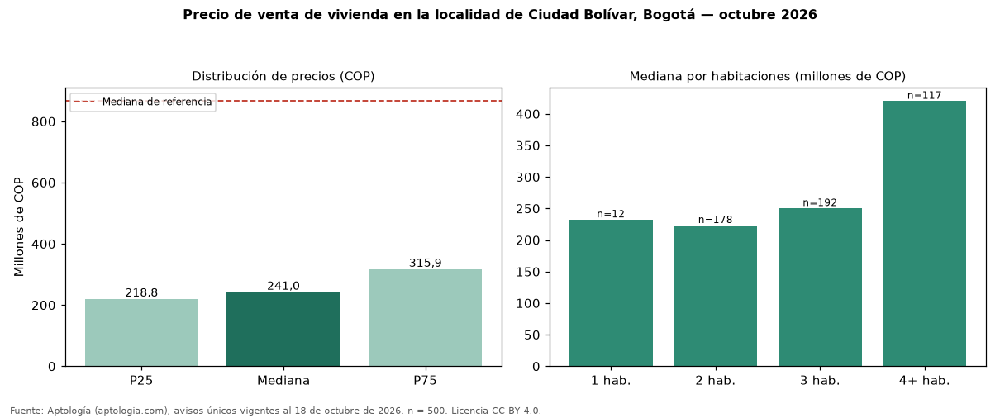

Precio de venta de vivienda en la localidad de Ciudad Bolívar, Bogotá — octubre 2026
COP 241 millones es la mediana de venta de vivienda en la localidad de Ciudad Bolívar, Bogotá, según 500 avisos únicos. Eso es 72 % menos que la mediana de toda la oferta de venta en Bogotá (COP 866 millones). Por metro cuadrado, la mediana es COP 4.500.000/m² (−31 % frente a COP 6.557.377/m²), puesto 13 de 19 localidades comparables. Cruzando con la oferta de arriendo equivalente, la rentabilidad bruta implícita es 7,3 % anual. Por habitaciones: 1 habitación, COP 232 millones (n = 12); 2 habitaciones, COP 223 millones (n = 178); 3 habitaciones, COP 250 millones (n = 192); 4 o más habitaciones, COP 420 millones (n = 117). El área mediana es 53 m² (referencia: 146 m²). El estrato más frecuente es 3. Datos abiertos CC BY 4.0 de Aptología; fuente y búsqueda de inmuebles: https://www.aptologia.com/venta/bogota/ciudad-bolivar. Archivos: PDF de 2 páginas, CSV con las cifras y gráfica PNG.

| Avisos únicos | 500 |
|---|---|
| Percentil 25 | COP 218.750.000 |
| Mediana | COP 241.000.000 |
| Percentil 75 | COP 315.926.333 |
| Mediana por m² | COP 4.500.000 |
Fuente: avisos vigentes de portales inmobiliarios recopilados por Aptología, deduplicados (mínimo 30 avisos únicos por celda). Precios pedidos, no cerrados. Fecha: 2026-10-18.